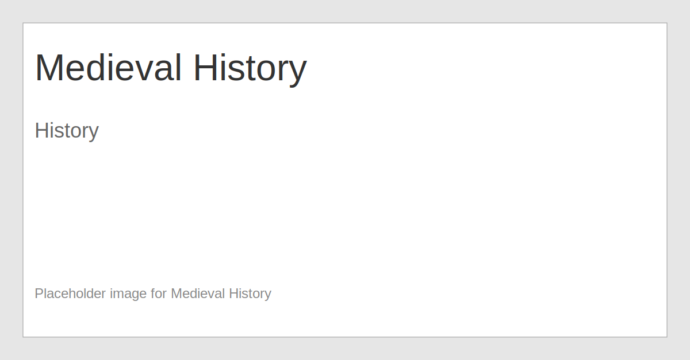

Medieval History
Medieval history covers the Middle Ages, a period of profound cultural and political change.
Tip: Use the Back button above to return to the homepage. The homepage loads with only the three top-level subjects visible.
Medieval history covers the Middle Ages, a period of profound cultural and political change.
Tip: Use the Back button above to return to the homepage. The homepage loads with only the three top-level subjects visible.